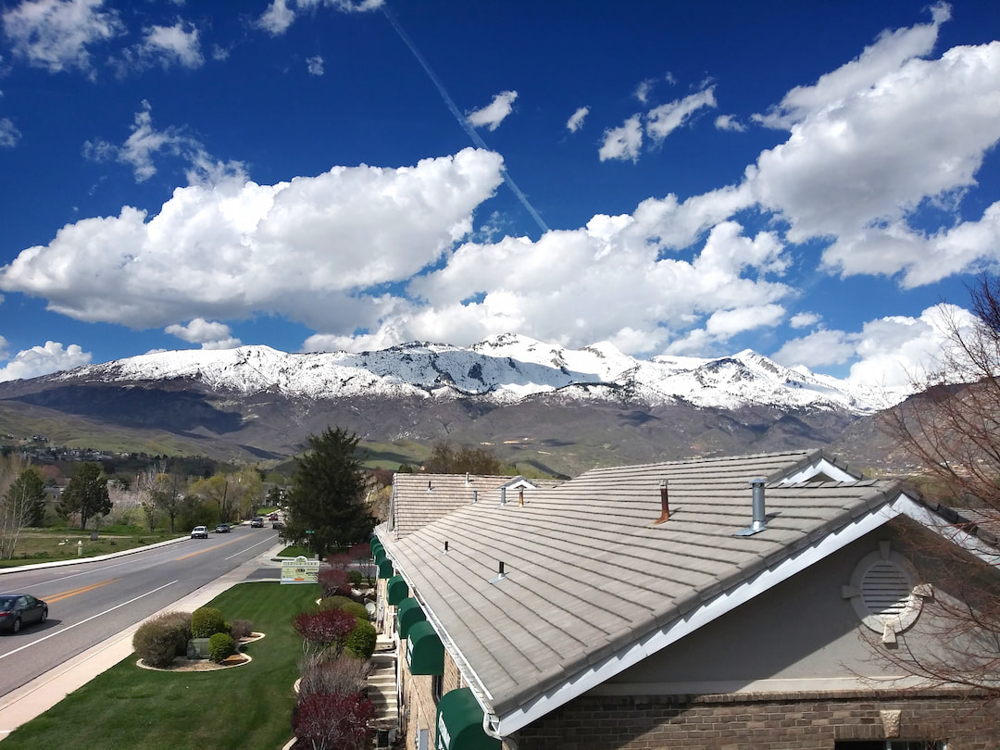

I grew up in the city of Alpine, Utah. Alpine is my favorite city for a few reasons;
The most obvious one is that it's where I spent my childhood. I was able to very safely
ride my bycicle to my middle school and back without my parents worrying about me.
Often times I would also walk home from school with friends from my neighborhood
and it was only about 15-20 minutes to walk.
Another reason that I love Alpine is because of how beautiful the mountains are that
surround it. To the North and East there are very tall mountains surrounding the town
that helped me to know where home was when i was further away and also showed you
just how the ski season would be by looking at them to see how much snow there was.
